1-3막 · 땅속의 금을 둘러싼 논쟁
한국어 번역은 독일어 원문에 대응하는 자동 번역 초안입니다.
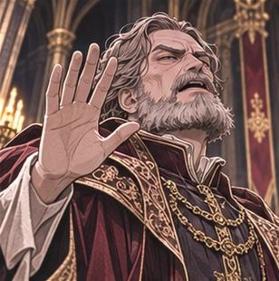
황제의 궁정은 축제 분위기를 이어 가고 있었지만, 대신들의 얼굴에는 웃음이 없었다. 왕좌 앞에 모인 사람들은 나라의 돈이 바닥났다는 사실을 알고 있었다. 재상은 그 문제를 종교와 질서의 문제로 설명하려 했고, 메피스토는 그 설명이 현실을 가리고 있다는 듯 조용히 듣고 있었다.
독일어 원문 · 한국어 번역
KANZLER:
Natur und Geist--so spricht man nicht zu Christen.
Deshalb verbrennt man Atheisten,
Weil solche Reden höchst gefährlich sind.
Natur ist Sünde, Geist ist Teufel,재상. 자연과 정신이라니, 그리스도인에게 그렇게 말하는 법은 없소. 그런 말은 몹시 위험하기에 무신론자들을 불태우는 것이오. 자연은 죄이고 정신은 악마요,
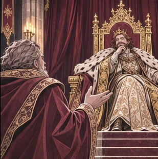
독일어 원문 · 한국어 번역
Sie hegen zwischen sich den Zweifel,
Ihr mißgestaltet Zwitterkind.
Uns nicht so!--Kaisers alten Landen
Sind zwei Geschlechter nur entstanden,그들 사이에는 의심이 있고, 당신은 변형된 자웅동체 아이입니다. 우리에게는 그렇지 않습니다!-카이저의 옛 땅 만약 성별이 두 개만 생긴다면,
재상이 먼저 입을 열었다. “자연과 정신이라니, 그리스도인 앞에서 그런 말을 해서는 안 됩니다. 자연은 죄이고 정신은 악마입니다.” 그는 세상이 정해진 질서를 벗어나면 이단과 마법사가 도시와 나라를 망친다고 주장했다.
독일어 원문 · 한국어 번역
Sie stützen würdig seinen Thron:
Die Heiligen sind es und die Ritter;
Sie stehen jedem Ungewitter
Und nehmen Kirch' und Staat zum Lohn.그들은 그의 왕좌를 합당하게 지지합니다: 그것은 성자들과 기사들이다. 그들은 어떤 폭풍우에도 견딜 수 있다 그리고 교회와 국가를 보상으로 삼으십시오.
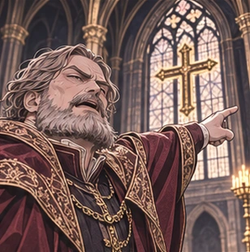
독일어 원문 · 한국어 번역
Dem Pöbelsinn verworrner Geister
Entwickelt sich ein Widerstand:
Die Ketzer sind's! die Hexenmeister!
Und sie verderben Stadt und Land.군중의 혼란스러운 마음에 저항이 발생하는 경우: 이단자들이에요! 마법사들! 그리고 그들은 도시와 나라를 망쳤습니다.
메피스토는 재상의 말을 듣고 입꼬리를 살짝 올렸다. 그는 신앙을 믿는 척하는 사람이 사실은 눈에 보이는 것만 인정하고 있다는 점을 알아차렸다. ‘만질 수 없는 것은 존재하지 않는다고 생각하는군.’ 메피스토는 그 허점을 곧 이용할 생각이었다.
독일어 원문 · 한국어 번역
Die willst du nun mit frechen Scherzen
In diese hohen Kreise schwärzen;
Ihr hegt euch an verderbtem Herzen,
Dem Narren sind sie nah verwandt.이제 넌 건방진 농담을 원해 이 높은 원으로 검게 변하십시오. 당신은 부패한 마음을 소중히 여기시며, 그들은 바보와 밀접한 관련이 있습니다.
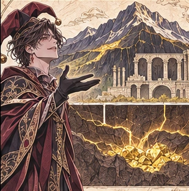
독일어 원문 · 한국어 번역
MEPHISTOPHELES:
Daran erkenn' ich den gelehrten Herrn!
Was ihr nicht tastet, steht euch meilenfern,
Was ihr nicht faßt, das fehlt euch ganz und gar,
Was ihr nicht rechnet, glaubt ihr, sei nicht wahr,메피스토펠레스: 그것이 내가 배운 신사를 알아보는 방법입니다! 당신이 만지지 않는 것은 당신에게서 몇 마일 떨어져 있습니다. 당신이 이해하지 못하는 것은 완전히 놓치는 것입니다. 당신이 기대하지 않고 믿는 것은 사실이 아니며,
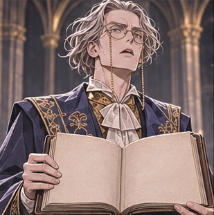
“그렇게 단정하면 오히려 의심이 커지지 않겠습니까?” 메피스토가 물었다. “당신들이 믿지 못하는 것은 아주 멀리 있는 것처럼 보이고, 계산하지 못하는 것은 진짜가 아니라고 여기니까요.” 그의 말은 공손했지만, 재상의 좁은 생각을 정확히 찔렀다.
독일어 원문 · 한국어 번역
Was ihr nicht wägt, hat für euch kein Gewicht,
Was ihr nicht münzt, das, meint ihr, gelte nicht.
KAISER:
Dadurch sind unsre Mängel nicht erledigt,
Was willst du jetzt mit deiner Fastenpredigt?당신이 무게를 달지 않는 것은 당신에게 무게가 없습니다. 당신이 동전을 만들지 않는 것은 중요하지 않다고 생각합니다. 황제: 이것은 우리의 단점을 제거하지 않습니다. 지금 사순절 설교에서 무엇을 원하시나요?
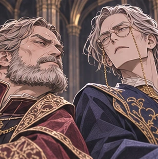
독일어 원문 · 한국어 번역
Ich habe satt das ewige Wie und Wenn;
Es fehlt an Geld, nun gut, so schaff es denn.
MEPHISTOPHELES:
Ich schaffe, was ihr wollt, und schaffe mehr;
Zwar ist es leicht, doch ist das Leichte schwer;나는 끝없는 방법과 만약에 지쳤습니다. 돈이 부족하니 관리하세요. 메피스토펠레스: 나는 당신이 원하는 것을 창조하고 더 많은 것을 창조합니다. 참으로 쉽지만 쉬운 일은 어렵다.
황제가 손을 들어 두 사람의 논쟁을 멈췄다. “그만하지. 교회와 정신에 대한 설교보다 지금 우리에게 필요한 것은 돈이야. 돈이 없다는 말을 하루 종일 듣고 있지 않나?” 축제를 즐기고 싶었던 황제도 더는 현실을 피할 수 없었다.
독일어 원문 · 한국어 번역
Es liegt schon da, doch um es zu erlangen,
Das ist die Kunst, wer weiß es anzufangen?
Bedenkt doch nur: in jenen Schreckensläuften,
Wo Menschenfluten Land und Volk ersäuften,이미 거기에 있지만 그것을 얻으려면 그게 예술인데, 어떻게 시작해야 할지 누가 알겠어요? 생각해 보세요. 테러가 벌어지는 동안, 인간의 홍수로 땅과 사람들이 익사한 곳,
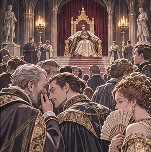
독일어 원문 · 한국어 번역
Wie der und der, so sehr es ihn erschreckte,
Sein Liebstes da--und dortwohin versteckte.
So war's von je in mächtiger Römer Zeit,
Und so fortan, bis gestern, ja bis heut.그 사람이 겁을 먹은 만큼, 이러저러하게, 그의 사랑하는 사람은 여기저기에 숨어있었습니다. 강력한 로마 시대부터 그랬습니다. 그럼 지금부터 어제까지, 그래 오늘까지.
황제는 숨을 길게 내쉬었다. “나는 끝없는 ‘어떻게’와 ‘만약’을 듣는 데 지쳤다. 돈이 없다면 만들어 내든지, 어디서 가져올지 말해 보게.” 궁정의 시선이 다시 메피스토에게 모였다.
독일어 원문 · 한국어 번역
Das alles liegt im Boden still begraben,
Der Boden ist des Kaisers, der soll's haben.
SCHATZMEISTER:
Für einen Narren spricht er gar nicht schlecht,
Das ist fürwahr des alten Kaisers Recht.이 모든 것은 땅 속에 조용히 묻혀 있다. 땅은 황제의 것이니 그가 차지하리라. 재무: 바보치고는 전혀 나쁜 말을 하지 않고, 이것은 진실로 옛 황제의 권리입니다.
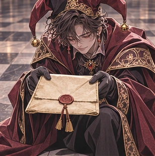
독일어 원문 · 한국어 번역
KANZLER:
Der Satan legt euch goldgewirkte Schlingen:
Es geht nicht zu mit frommen rechten Dingen.
MARSCHALK:
Schafft' er uns nur zu Hof willkommne Gaben,
Ich wollte gern ein bißchen Unrecht haben.총리: 사탄은 당신을 위해 금 올무를 놓습니다. 경건하고 의로운 일을 하는 것은 불가능합니다. 마샬크: 그가 법정에서 우리에게 환영 선물을 줬다면, 나는 조금 틀리고 싶었다.
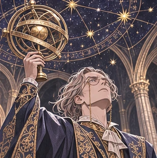
메피스토는 기다렸다는 듯 대답했다. “원하시는 것은 만들어 드릴 수 있습니다. 쉬운 일처럼 보이지만, 쉬운 일을 실제로 시작하는 것이 가장 어렵지요.” 그는 돈이 이미 세상 어딘가에 놓여 있다고 말하며 사람들의 욕심과 두려움을 건드렸다.
독일어 원문 · 한국어 번역
HEERMEISTER:
Der Narr ist klug, verspricht, was jedem frommt;
Fragt der Soldat doch nicht, woher es kommt.
MEPHISTOPHELES:
Und glaubt ihr euch vielleicht durch mich betrogen,
Hier steht ein Mann! da, fragt den Astrologen!아미 마스터: 어리석은 자는 영리하여 모든 사람에게 좋은 것을 약속합니다. 군인은 그것이 어디서 오는지 묻지 않습니다. 메피스토펠레스: 그리고 혹시 당신이 나에게 속았다고 생각하시나요? 여기 남자가 서 있어요! 거기 점성술사에게 물어보세요!
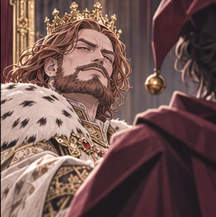
독일어 원문 · 한국어 번역
In Kreis' um Kreise kennt er Stund' und Haus;
So sage denn: wie sieht's am Himmel aus?
GEMURMEL:
Zwei Schelme sind's--Verstehn sich schon--
Narr und Phantast--So nah dem Thron--원을 그리면서 그는 시간과 집을 알고 있습니다. 그러니 말해보세요: 하늘에서는 어떤 모습일까요? 중얼거림: 그들은 두 명의 악당입니다. 그들은 잘 지내고 있습니다. 바보이자 환상주의자--왕좌에 너무 가깝다--
독일어 원문 · 한국어 번역
Ein mattgesungen--Alt Gedicht--
Der Tor bläst ein--Der Weise spricht--
ASTROLOG:
Die Sonne selbst, sie ist ein lautres Gold,
Merkur, der Bote, dient um Gunst und Sold,지루하게 부르는 알토 시-- 바보가 불어온다 - 현명한 사람이 말한다 - 점성술사: 태양 자체는 순금이고, 메신저인 머큐리는 호의와 보수를 위해 봉사하며,
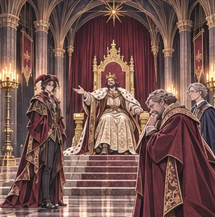
“전쟁과 혼란이 지나간 땅을 생각해 보십시오.” 메피스토가 말을 이었다. “사람들은 소중한 물건을 빼앗길까 봐 땅속에 숨겼습니다. 강력한 로마 시대부터 어제까지, 아니 오늘까지도 그런 일은 계속됐습니다.”
독일어 원문 · 한국어 번역
Frau Venus hat's euch allen angetan,
So früh als spat blickt sie euch lieblich an;
Die keusche Luna launet grillenhaft;
Mars, trifft er nicht, so dräut euch seine Kraft.비너스 씨가 여러분 모두에게 해냈습니다. 그녀는 일찍부터 늦게까지 당신을 다정하게 바라봅니다. 순결한 루나는 기발한 기분을 갖고 있습니다. 그가 화성을 공격하지 않는다면 그의 힘이 당신을 위협할 것입니다.
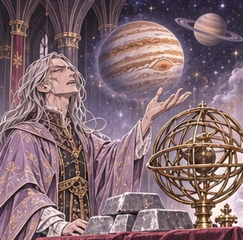
독일어 원문 · 한국어 번역
Und Jupiter bleibt doch der schönste Schein,
Saturn ist groß, dem Auge fern und klein.
Ihn als Metall verehren wir nicht sehr,
An Wert gering, doch im Gewichte schwer.그리고 목성은 여전히 가장 아름다운 빛으로 남아있습니다. 토성은 크고 눈에서 멀리 떨어져 있으며 작습니다. 우리는 그를 금속으로 별로 숭배하지 않습니다. 가치는 작지만 무게는 무겁습니다.
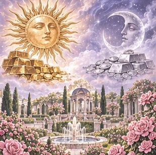
“그 보물은 지금도 땅속에 묻혀 있습니다. 땅은 황제의 것이니, 그 안에 있는 것도 황제의 것이지요.” 메피스토는 왕좌를 바라봤다. 보물을 찾는 일은 도둑질이 아니라 권리를 되찾는 일처럼 들리게 말한 것이다.
독일어 원문 · 한국어 번역
Ja! wenn zu Sol sich Luna fein gesellt,
Zum Silber Gold, dann ist es heitre Welt;
Das übrige ist alles zu erlangen:
Paläste, Gärten, brüstlein, rote Wangen,예! 솔이 루나와 멋지게 합류했을 때, 은금에게는 즐거운 세상이요, 나머지는 모두 얻을 수 있습니다: 궁전, 정원, 작은 가슴, 붉은 뺨,
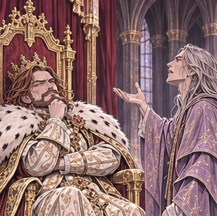
독일어 원문 · 한국어 번역
Das alles schafft der hochgelahrte Mann,
Der das vermag, was unser keiner kann.
KAISER:
Ich höre doppelt, was er spricht,
Und dennoch überzeugt's mich nicht.학식이 높은 사람은 이 모든 일을 할 수 있다. 우리 중 누구도 할 수 없는 일을 누가 할 수 있습니까? 황제: 나는 그가 말하는 것을 두 번 듣습니다. 그러나 그것은 나를 설득하지 못합니다.
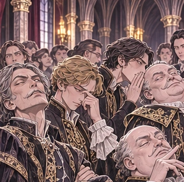
재무관이 낮게 중얼거렸다. “바보치고는 나쁜 말을 하지는 않는군요. 옛 황제의 권리라는 말은 맞습니다.” 그는 금고가 비어 있다는 사실을 누구보다 잘 알고 있었기에 메피스토의 말에 귀가 솔깃해졌다.
독일어 원문 · 한국어 번역
GEMURMEL:
Was soll uns das?--Gedroschner Spaß--
Kalenderei--Chymisterei--
Das hört' ich oft--Und falsch gehofft--
Und kommt er auch--So ist's ein Gauch--중얼거림: 이것이 우리에게 어떤 영향을 미칠까요?--세 배의 재미-- 달력 달걀--화학-- 나는 그 말을 자주 들었고-그리고 기대가 틀렸어요-- 그리고 그 사람도 오면 - 농담이에요 -
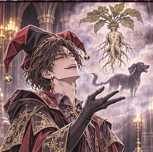
독일어 원문 · 한국어 번역
MEPHISTOPHELES:
Da stehen sie umher und staunen,
Vertrauen nicht dem hohen Fund,
Der eine faselt von Alraunen,
Der andre von dem schwarzen Hund.메피스토펠레스: 거기 그들은 주위에 서서 놀랐습니다. 높은 발견물을 믿지 마라. 한 남자가 맨드레이크에 대해 이야기합니다. 검은 개에 관한 또 다른 하나.
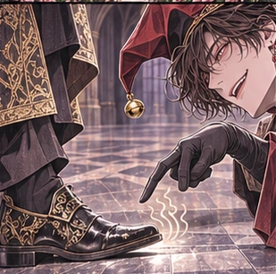
재상은 곧바로 반대했다. “사탄이 금빛 올가미를 놓는 겁니다. 그런 방법은 올바른 일이 아닙니다.” 그는 메피스토의 제안이 국가를 살리는 길이 아니라 더 큰 죄를 부르는 길이라고 몰아붙였다.
독일어 원문 · 한국어 번역
Was soll es, daß der eine witzelt,
Ein andrer Zauberei verklagt,
Wenn ihm doch auch einmal die Sohle kitzelt,
Wenn ihm der sichre Schritt versagt.농담하는 사람이 무슨 소용이 있나요? 또 다른 사람은 나를 마술이라고 비난하고, 발바닥이 간지럽다면, 확실한 단계가 실패했을 때.
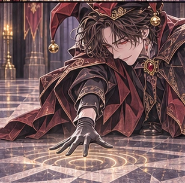
독일어 원문 · 한국어 번역
Ihr alle fühlt geheimes Wirken
Der ewig waltenden Natur,
Und aus den untersten Bezirken
Schmiegt sich herauf lebend'ge Spur.다들 은밀한 일을 느끼는구나 영원히 다스리는 자연의, 그리고 가장 낮은 지역에서 살아있는 산책로에 자리 잡고 있습니다.
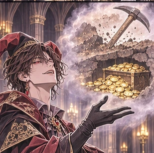
궁정의 살림을 맡은 대신은 한숨을 쉬었다. “저도 잘못된 방법이라도 조금은 갖고 싶습니다.” 그는 식탁에 오르는 고기와 곡식은 아직 있지만, 그 모든 것을 유지할 돈이 없다고 설명했다.
독일어 원문 · 한국어 번역
Wenn es in allen Gliedern zwackt,
Wenn es unheimlich wird am Platz,
Nur gleich entschlossen grabt und hackt,
Da liegt der Spielmann, liegt der Schatz!팔다리마다 통증이 있을 때, 그 곳에서 상황이 무서워지면, 의지를 가지고 파고 자르면 됩니다. 거기에 음악가가 있고, 보물이 있다!
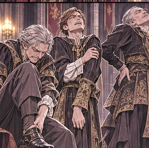
독일어 원문 · 한국어 번역
GEMURMEL:
Mir liegt's im Fuß wie Bleigewicht--
Mir krampft's im Arme--Das ist Gicht--
Mir krabbelt's an der großen Zeh'--
Mir tut der ganze Rücken weh--중얼거림: 마치 내 발에 납덩이 같은 것이-- 팔이 쥐어짜네요--통풍이에요-- 내 엄지발가락이 기어다니고 있어요-- 허리 다 아프다--
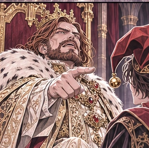
포도주는 이미 바닥났다. 좋은 해에 담근 술은 귀한 손님들이 모두 마셔 버렸고, 시의회의 저장고까지 비워졌다. 연회가 끝난 뒤 남는 것은 빈 통과 늘어난 빚뿐이었다.
독일어 원문 · 한국어 번역
Nach solchen Zeichen wäre hier
Das allerreichste Schatzrevier.
KAISER:
Nur eilig! du entschlüpfst nicht wieder,
Erprobe deine Lügenschäume그런 징후가 여기에있을 것입니다 가장 부유한 보물 지역. 황제: 서둘러요! 당신은 다시는 미끄러지지 않을 것입니다. 누워 있는 폼을 테스트해보세요
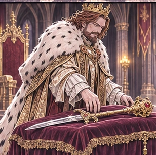
독일어 원문 · 한국어 번역
Und zeig uns gleich die edlen Räume.
Ich lege Schwert und Zepter nieder
Und will mit eignen hohen Händen,
Wenn du nicht lügst, das Werk vollenden,그리고 우아한 객실을 보여주세요. 나는 칼과 홀을 내려놓고 그리고 내 손으로 원하고, 거짓말을 하지 않는다면 일을 끝내라.
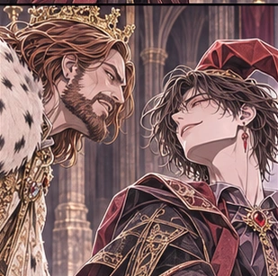
대신은 더 무거운 이야기를 이어 갔다. 음식값과 품삯, 빚을 갚을 날짜가 한꺼번에 다가왔다. 앞으로 들어올 수입을 미리 당겨 쓰는 일이 반복되면서, 궁정은 오늘을 버티기 위해 내일의 돈까지 없애고 있었다.
독일어 원문 · 한국어 번역
Dich, wenn du lügst, zur Hölle senden!
MEPHISTOPHELES:
Den Weg dahin wüßt' allenfalls zu finden--
Doch kann ich nicht genug verkünden,
Was überall besitzlos harrend liegt.거짓말하면 지옥으로 보내라! 메피스토펠레스: 기껏해야 그곳으로 가는 길을 찾을 수 있었을 텐데... 하지만 난 충분히 선언할 수 없어 소유하지 않고 기다리고 있는 것은 도처에 있다.
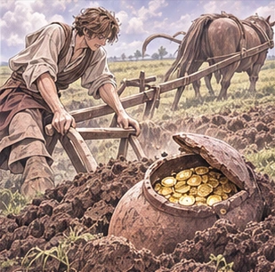
독일어 원문 · 한국어 번역
Der Bauer, der die Furche pflügt,
Hebt einen Goldtopf mit der Scholle,
Salpeter hofft er von der Leimenwand
Und findet golden-goldne Rolle밭고랑을 가는 농부, 흙덩이와 함께 금항아리를 들어올려라. 그는 접착제 벽에서 초석을 얻기를 희망합니다. 그리고 황금-황금 역할을 찾습니다
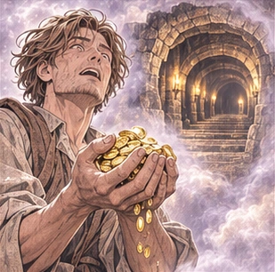
독일어 원문 · 한국어 번역
Erschreckt, erfreut in kümmerlicher Hand.
Was für Gewölbe sind zu sprengen,
In welchen Klüften, welchen Gängen
Muß sich der Schatzbewußte drängen,겁먹고 빈약한 손에 기뻐합니다. 어떤 종류의 금고를 폭파해야 합니까? 어느 틈새, 어느 복도에서 보물을 아는 사람은 자신을 밀어붙여야 하며,
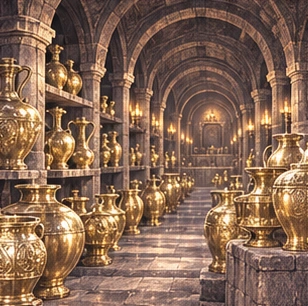
총사령관도 군대의 사정을 보고했다. 병사들은 봉급을 기다리고 있었고, 전쟁에 필요한 장비는 부족했다. 그러나 군인은 돈의 출처를 묻지 않는다며, 메피스토가 어떤 방법을 제안하든 우선 받아 보자는 분위기가 생겼다.
독일어 원문 · 한국어 번역
Zur Nachbarschaft der Unterwelt!
In weiten, altverwahrten Kellern
Von goldnen Humpen, Schüsseln, Tellern
Sieht er sich Reihen aufgestellt;지하세계의 동네로! 넓고 잘 관리된 지하실에서 황금색 컵, 그릇, 접시 그는 자신이 줄지어 서 있는 것을 본다.
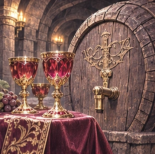
독일어 원문 · 한국어 번역
Pokale stehen aus Rubinen,
Und will er deren sich bedienen,
Daneben liegt uraltes Naß.
Doch--werdet ihr dem Kundigen glauben--컵은 루비로 만들어졌고, 그리고 그가 그것을 사용하고 싶다면, 그 옆에는 고대 물이 있습니다. 하지만--박식한 사람을 믿으시겠습니까--
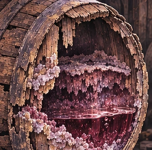
메피스토는 재상과 대신들의 보고가 끝나자 황제를 향해 환하게 웃었다. “폐하, 이렇게 훌륭한 궁정이 있는데 무슨 걱정이십니까? 폐하가 명령하시면 군대가 움직이고, 지혜로운 대신들이 힘을 다하지 않습니까?” 방금 들은 보고와 정반대의 말을 하며 황제의 기분을 풀어 준 것이다.
독일어 원문 · 한국어 번역
Verfault ist längst das Holz der Dauben,
Der Weinstein schuf dem Wein ein Faß.
Essenzen solcher edlen Weine,
Gold und Juwelen nicht alleine지팡이의 나무는 이미 썩은 지 오래이고, 타르타르는 포도주를 담는 통을 만들었습니다. 이렇게 훌륭한 와인의 정수, 금과 보석은 혼자가 아닙니다
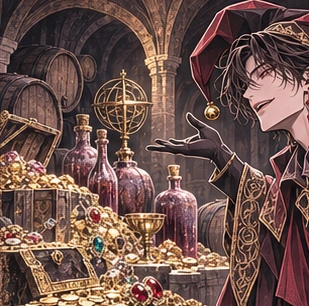
독일어 원문 · 한국어 번역
Umhüllen sich mit Nacht und Graus.
Der Weise forscht hier unverdrossen;
Am Tag erkennen, das sind Possen,
Im Finstern sind Mysterien zu Haus.밤과 공포로 몸을 감싸십시오. 현명한 사람은 여기에서 담대히 연구합니다. 오늘은 이게 장난이라는 걸 깨달으세요. 미스터리는 어둠 속에 집에 있습니다.
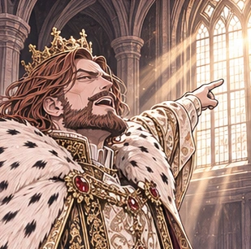
한 신하가 작게 비웃었다. “말은 잘하는군. 거짓말로 자리부터 잡으려는 모양이야.” 다른 신하는 메피스토에게 분명한 속셈이 있다고 수군거렸다. 궁정 사람들은 그가 단순히 황제를 칭찬하는 광대가 아니라는 것을 느끼고 있었다.
독일어 원문 · 한국어 번역
KAISER:
Die lass' ich dir! Was will das Düstre frommen?
Hat etwas Wert, es muß zu Tage kommen.
Wer kennt den Schelm in tiefer Nacht genau?
Schwarz sind die Kühe, so die Katzen grau.황제: 나는 당신에게 맡길 것이다! 어둠은 무엇을 달성하고 싶어합니까? 가치 있는 것이 있다면 밝혀져야 합니다. 한밤중에 도적을 정확히 아는 사람은 누구입니까? 소는 검은색이고 고양이는 회색이다.
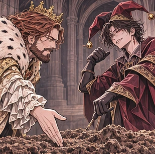
독일어 원문 · 한국어 번역
Die Töpfe drunten, voll von Goldgewicht--
Zieh deinen Pflug und ackre sie ans Licht.
MEPHISTOPHELES:
Nimm Hack' und Spaten, grabe selber,
Die Bauernarbeit macht dich groß,아래 화분에는 금 무게가 가득-- 쟁기를 꺼내서 빛 속으로 쟁기질하세요. 메피스토펠레스: 곡괭이와 삽을 들고, 자신을 파헤쳐 보세요. 농민 일은 당신을 위대하게 만들고,
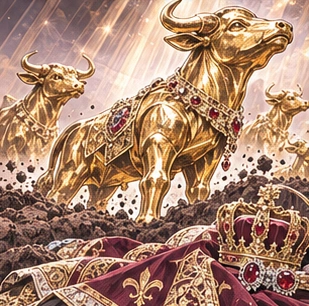
메피스토는 마침내 핵심을 꺼냈다. “세상 어디든 부족한 것은 있습니다. 이곳에는 돈이 없군요. 하지만 바닥에 떨어진 돈을 줍자는 말은 아닙니다. 산속 광맥과 오래된 담 밑에는 금이 묻혀 있습니다.”
독일어 원문 · 한국어 번역
Und eine Herde goldner Kälber,
Sie reißen sich vom Boden los.
Dann ohne Zaudern, mit Entzücken
Kannst du dich selbst, wirst die Geliebte schmücken;그리고 금송아지 떼, 그들은 땅에서 스스로 찢어집니다. 그러면 망설임 없이 기쁜 마음으로 자신을 알면 사랑하는 사람을 장식하게 될 것입니다.
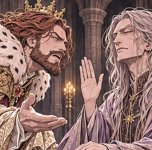
독일어 원문 · 한국어 번역
Ein leuchtend Farb--und Glanzgestein erhöht
Die Schönheit wie die Majestät.
KAISER:
Nur gleich, nur gleich! Wie lange soll es währen!
ASTROLOG:
Herr, mäßige solch dringendes Begehren,밝은 색상과 광택이 나는 돌이 증가했습니다. 위엄과 같은 아름다움. 황제: 똑같아, 똑같아! 얼마나 오래 지속되어야합니까! 점성술사: 주님, 이러한 긴급한 욕망을 조절하시고,
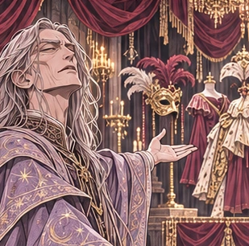
황제가 몸을 앞으로 기울였다. “그 금을 누가 꺼내지?” 메피스토는 기다렸다는 듯 손을 펼쳤다. “재주 있는 사람의 힘과 정신의 힘이면 됩니다. 금은 이미 거기에 있습니다. 이제 필요한 것은 그것을 찾아낼 방법뿐이지요.” 궁정의 논쟁은 금을 찾는 문제로 방향을 바꾸기 시작했다.
독일어 원문 · 한국어 번역
Laß erst vorbei das bunte Freudenspiel;
Zerstreutes Wesen führt uns nicht zum Ziel.
Erst müssen wir in Fassung uns versühnen,
Das Untre durch das Obere berdienen.먼저 다채로운 기쁨의 게임을 지나가게 하십시오. 산만한 성격은 우리를 목표로 이끌지 않습니다. 먼저 우리는 스스로 화해해야 합니다. 위쪽을 통해 아래쪽을 섬깁니다.
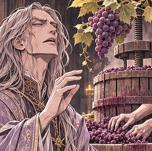
독일어 원문 · 한국어 번역
Wer Gutes will, der sei erst gut;
Wer Freude will, besänftige sein Blut;
Wer Wein verlangt, der keltre reife Trauben;
Wer Wunder hofft, der stärke seinen Glauben.누구든지 선을 원한다면 먼저 선하게 하십시오. 기쁨을 원하는 사람은 그의 피를 통해 진정되게 하십시오. 포도주를 원하는 사람은 잘 익은 포도를 짜고, 기적을 바라고 있다면 믿음을 강화하십시오.
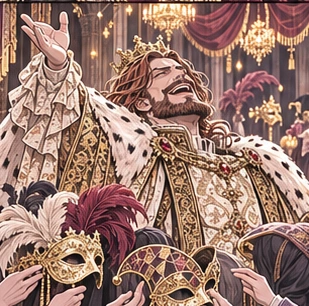
재상은 여전히 불안한 얼굴로 메피스토를 바라봤고, 재무관은 금고와 산속 광맥을 번갈아 떠올렸다. 황제는 처음으로 ‘돈이 없다’는 보고 대신 해결책의 가능성을 들었다. 메피스토는 그 순간을 놓치지 않았다. 사람들의 욕망이 움직이기 시작하면, 자신이 준비한 다음 단계도 곧 받아들여질 것이었다.
독일어 원문 · 한국어 번역
KAISER:
So sei die Zeit in Fröhlichkeit vertan!
Und ganz erwünscht kommt Aschermittwoch an.
Indessen feiern wir, auf jeden Fall,황제: 그러니 시간을 행복하게 낭비하십시오! 그리고 재의 수요일이 아주 원하는 도착합니다. 그동안 우리는 확실히 축하합니다
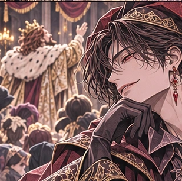
독일어 원문 · 한국어 번역
Nur lustiger das wilde Karneval.
MEPHISTOPHELES:
Wie sich Verdienst und Glück verketten,
Das fällt den Toren niemals ein;야생 카니발이 더 재미있습니다. 메피스토펠레스: 공덕과 행복이 어떻게 연결되어 있는지, 바보에게는 이런 일이 결코 일어나지 않습니다.
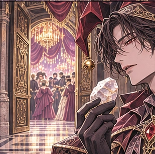
독일어 원문 · 한국어 번역
Wenn sie den Stein der Weisen hätten,
Der Weise mangelte dem Stein.
Weitläufiger Saal mit Nebengemächern
만약 철학자의 돌이 있었다면, 돌에는 현자가 부족했습니다. 옆방이 있는 넓은 홀